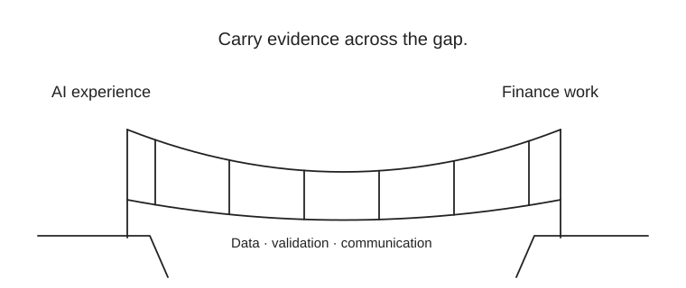

Early preparation: two finance conversations a month. Around 12 weeks before your exam: finish two cases, a CV and an interview bank. Start five matched applications and two relevant conversations a week when the portfolio is ready; reduce the load in the final six exam weeks. After your result, update the CV accurately and expand the pipeline.
CV: lead with measurable business outcomes from AI engineering, then two finance cases and any relevant research. Say “Passed CFA Level I” only after passing; candidate wording requires actual registration and current status. Passing Level I does not make you a CFA charterholder.

Translate real experience into the new role’s requirements. A project demonstrates learning; it does not rewrite your employment history.
A compact interview syllabus
Technical: SQL joins/windows, Python data checks, probability, calibration, time-series validation and leakage. Finance: statements, cash versus profit, DCF, WACC, duration and credit loss. Business: profitability diagnosis, KPI choice, decision under uncertainty, one recommendation with alternatives.
Prepare six stories: ownership, disagreement, failed model, stakeholder communication, ambiguous problem, measurable impact. Present a project in five minutes: problem → options → evidence → recommendation → downside → next step. Practice Excel and a one-slide chart, not just notebooks.
If the first switch does not land
After 30 matched applications, diagnose the funnel. No screens: improve role fit and CV. Screens but no technical passes: repair specific skills. Final interviews without offers: sharpen finance judgment and communication. Consider an internal finance project or finance-data role with named stakeholder access. A failed CFA attempt shifts the exam plan, not your whole career; keep applying on demonstrated skills.